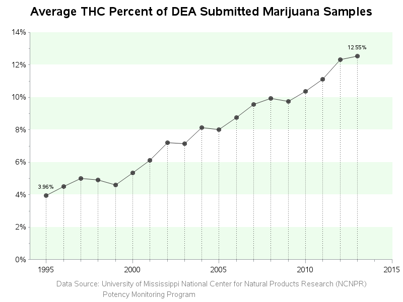
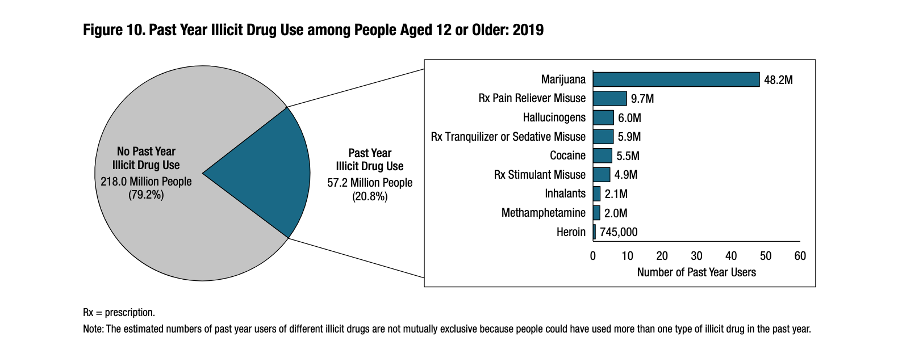

"Approximately 1 in 10 people who use marijuana will become addicted. When they start before age 18, the rate of addiction rises to 1 in 6."
- SAMHSA.gov
DON'T DRIVE WHILE HIGH!
Learn The Facts

Source: sas.com
Tetrahydrocannabinol (THC) contributes to most of marijuana's psychological effects, affecting the memory, movement, coordination, and time perception.
- THC levels in the 1990s: 3-4%
- THC levels today: 15-20%

Source: SAMHSA.gov, pg. 15
- Ages 12-17: 3.3 million
- Ages 18-25: 12.0 million
- Ages 26+: 33.0 million